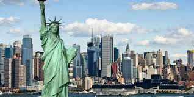

Fashion Weeks del Mundo

¿Que son?
Las Fashion Weeks a nivel mundial son eventos cruciales en la industria de la
moda, donde los diseñadores presentan sus colecciones más innovadoras y marcan las tendencias para la
temporada siguiente. Estos eventos no solo son una oportunidad para ver lo último en moda, sino también para
disfrutar de la creatividad y la cultura que se fusionan en cada desfile.
Las Fashion Weeks en el Mundo

Las Fashion Weeks se celebran en varias ciudades globales, siendo algunas de las
más famosas Nueva York, Londres, Milán y París . Cada una de estas ciudades tiene su propio
enfoque, pero todas comparten un objetivo común: mostrar las tendencias que marcarán el futuro de la moda.
Los desfiles en Nueva York suelen ser vibrantes y accesibles, mientras que
en Parísse da más énfasis a la alta costura.En Milán, la elegancia y el lujo predominan, y en Londres, la moda siempre tiene un toque experimental y de vanguardia.


Historia de las Fashion Weeks Globales
-
Nueva York
: La New York Fashion Week se celebra desde 1943 y fue la primera en
celebrarse. Fue creada para dar visibilidad a los diseñadores estadounidenses.
-
Londres
: La London Fashion Week comenzó oficialmente en 1984 y ha crecido rápidamente,
destacándose por la creatividad y el enfoque experimental.
-
Milan
: La Milan Fashion Week se ha celebrado desde la década de 1950 y es conocida por
su lujo y elegancia.
-
Paris
: La Paris Fashion Week tiene más de 100 años de historia y es considerada la más
prestigiosa, donde se muestran las colecciones de alta costura y lujo.
Top 3 mejoress Fashion Weeks
-
París 1999
– Alexander McQueen presentó No. 13, con robots pintando a una modelo en
vivo. Innovación y arte en la moda.

-
Milán 1991
– El desfile de Versace con Cindy, Naomi, Christy y Linda al ritmo de
Freedom! '90, consolidando la era de las supermodelos.
-
Nueva york
– El desfile de Versace con Cindy, Naomi, Christy y Linda al ritmo de
Nueva York 1973 (Batalla de Versalles) – Diseñadores estadounidenses vencieron a los
franceses, destacando por primera vez a modelos negras en la pasarela.

html-ejerc7-viaje.html by ines quiros is marked with CC0 1.0

">html-ejerc7-viaje.html by ines quiros is marked with CC0 1.0